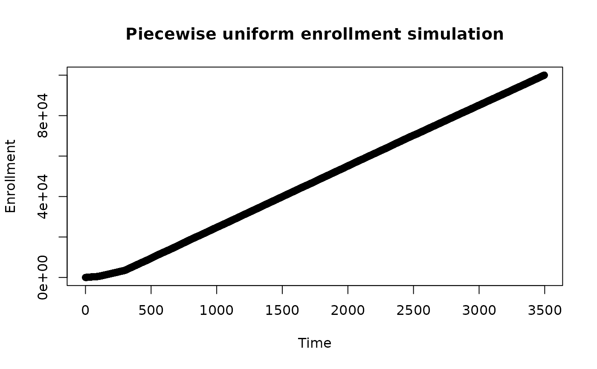
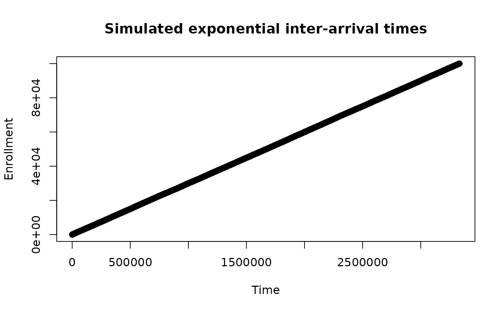

With piecewise exponential enrollment rate generation any enrollment rate
distribution can be easily approximated.
rpwexp_enroll() is to support simulation of both the Lachin and Foulkes (1986)
sample size method for (fixed trial duration) as well as the
Kim and Tsiatis(1990) method (fixed enrollment rates and either
fixed enrollment duration or fixed minimum follow-up);
see gsDesign::nSurv().
Usage
rpwexp_enroll(
n = NULL,
enroll_rate = data.frame(duration = c(1, 2), rate = c(2, 5))
)Examples
# Example 1
# Piecewise uniform (piecewise exponential inter-arrival times) for 10k patients enrollment
# Enrollment rates of 5 for time 0-100, 15 for 100-300, and 30 thereafter
x <- rpwexp_enroll(
n = 1e5,
enroll_rate = data.frame(
rate = c(5, 15, 30),
duration = c(100, 200, 100)
)
)
plot(x, 1:1e5,
main = "Piecewise uniform enrollment simulation",
xlab = "Time",
ylab = "Enrollment"
)

# Example 2
# Exponential enrollment
x <- rpwexp_enroll(
n = 1e5,
enroll_rate = data.frame(rate = .03, duration = 1)
)
plot(x, 1:1e5,
main = "Simulated exponential inter-arrival times",
xlab = "Time",
ylab = "Enrollment"
)
